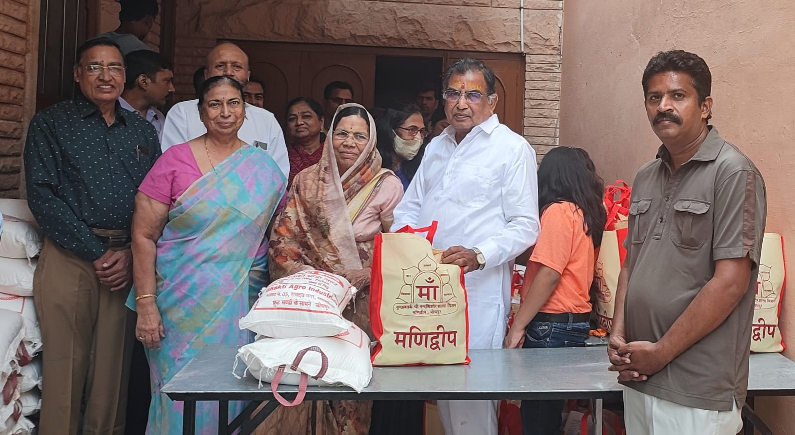
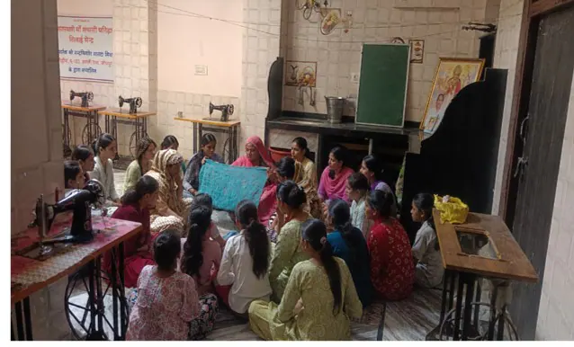

To work for the welfare of human life alongside the establishment of universal brotherhood and world peace.
Yugpravartak Shri Nandkishore Sharda Mission · Manidweep, Jodhpur
Universal Brotherhood, World Peace and Human Welfare.
Born from Kumari Madhubala Advani’s deep reverence for her spiritual master, Shri Nandkishore Sharda, the Mission carries his timeless teachings into living service. By preserving its founding methodology and nurturing its sacred vision, she sustains an unbroken stream of spiritual wisdom, accessible education and selfless Seva—advancing global harmony, inner peace and human welfare.
To address humanity’s deepest spiritual questions and foster universal harmony by guiding individuals toward higher consciousness, joyful service, moral integrity and spiritual self-realization through wisdom that is timeless in essence and relevant to modern life.

Care that stayed. Opportunity that continued.
What began with educational support grew into a continuing circle of guidance, dignity and family care.
30 YearsOf continuous grassroots service
₹6.72 Cr+Educational scholarships provided
₹1.07 Cr+Food and family assistance
300 FamiliesReceiving continuing monthly support
Cumulative verified figures as of 31 March 2026.
Explore Impact in NumbersA Flame Lit by Divine Purpose
The work carried forward through this Mission began three decades ago, but the spiritual flame from which it grew reaches much further back. Its roots lie in years of disciplined Sadhna and spiritual practice undertaken by Kumari Madhubala Advani under the guidance of Kumari Basanti Manihar and her spiritual master, Shri Nandkishore Sharda. Their shared inner discipline formed the living foundation from which contemplation gradually became compassionate action.
The Spiritual Lineage
Wisdom, guidance and devoted practice

The Spiritual Guru
Shri Nandkishore Sharda
At fifteen, a profound encounter with mortality at his father's pyre in 1959 turned Nandkishore Sharda inward. Years of disciplined Sadhna transformed that search into Buddhi-Vivek Yog Sadhna—a universal path of wisdom, discernment and inner steadiness that continues to guide seekers today.
Read Bhaiyaji's journey
The Spiritual Guide
Basanti Ji Manihar
Beginning her spiritual journey under Bhaiyaji's guidance in 1964, Maa Basanti devoted her life to translating his wisdom into compassionate service. After his passing in 2003, she carried their spiritual work forward with unwavering resolve, preserving its essence while expanding its service until 2021.
Read Maa Basanti's journey
Devoted Disciple · Living Stewardship
Madhubala Ji Advani
Madhu Maa's spiritual journey began in 1970, when Maa Basanti introduced the then 19-year-old Madhubala Advani to Bhaiyaji. That meeting marked a profound turning point, transforming a carefree young woman into a devoted spiritual seeker. Under the guidance of Maa Basanti and Shri Nandkishore Sharda, she undertook years of profound Sadhna and received the blessings of Jagatjanani Maa Tripurasundari.
When this spiritual commitment found expression in organised service three decades ago, she began working quietly at the grassroots. Alongside students, families, schools and volunteers, she listened closely, identified genuine need and ensured that assistance was offered with dignity and without discrimination.
Following Maa Basanti Ji's passing in 2021, she became President. Today, she guides the Mission with spiritual clarity and leads a qualified, selfless team carrying its educational, welfare and developmental initiatives forward.
Meet our PresidentWhen Sadhna Became Service
Service to humanity became a natural continuation of inner spiritual practice.
With the grace of Jagatjanani Maa Tripurasundari, they regarded service to humanity not as separate from spiritual practice, but as its natural extension—an offering dedicated to human welfare, universal brotherhood and world peace.
What began as a scholarship programme for economically disadvantaged schoolgirls gradually evolved into a holistic system of care. Financial assistance grew together with Sanskar, mentoring, career guidance, personality development and spiritual grounding—helping individuals become educated, self-reliant, compassionate and prepared to uplift others.
A Mission That Grew by Listening
The work was never designed as a collection of programmes. Each new expression of care began with a need encountered, a relationship sustained and a responsibility accepted.

Education Became a Continuing Relationship
What began by helping economically disadvantaged schoolgirls remain in education grew as their aspirations grew. Support continued into college and professional courses, later widening to boys facing the same barriers—always joined with mentoring, Sanskar and the confidence to build a dignified life.
Explore Educational Empowerment
Inner Wisdom Remained the Foundation
Financial assistance could open a door, but lasting transformation required character, discernment and inner steadiness. Spiritual teachings, Sunday gatherings, Yoga and meditation therefore remained woven through the work—helping knowledge mature into responsible living.
Explore Wellness & Inner Life
Care Reached the Whole Family
When the pandemic revealed hunger, illness and fragile household incomes among students’ families, the relationship could not end at the classroom. Monthly assistance began with 50 families and gradually grew to approximately 300—offered with continuity, sensitivity and dignity.
Explore Family Care
Support Grew into Self-Reliance
For women carrying the heaviest share of hardship, immediate assistance was not enough. Free sewing and tailoring training created a path towards capability, confidence and economic independence—allowing care to become the means of standing on one’s own.
Explore Women’s Self-Reliance
Our Impact
Compassion, Measured in Lives Changed
Three decades of sustained relationships across education, family welfare and holistic development—measured separately so the scale and purpose of each intervention remain clear.


Figures are cumulative and are as of 31 March 2026. The girls’ figures combine the Swami Vivekanand Students’ Welfare Charitable Trust and Maa Shardamani Trust; the boys’ figures relate to the Gyanyogi Shri Nandkishore Sharda Adhyatma Kendra.
Beyond the Numbers
Every Figure Holds a Human Story
A Journey of Possibility
From supported student to school principal

Poonam Mishra joined the Trust in 1998 while studying in Class 6. When her father lost his job and even meeting basic household expenses became difficult, sustained educational support enabled her to continue learning through the completion of her M.Sc. in 2010. Today, she leads Wisdom International School in Jodhpur as its Principal.
The Trust refused to let our circumstances define our ceiling.Poonam MishraPrincipal · Wisdom International School, Jodhpur
A guiding light that builds both education and character.
Raj Kumari Panwar · StudentHelping me face challenges with confidence and composure.
Krishna Rajpurohit · StudentVolunteers who treat me like family and mentors.
Bhavika Chanda · Student
Moments of Service
A Journey Captured
Real moments from a living tradition of learning, inner growth and service. Each photograph opens the story it belongs to.
Sunday Sanskar ClassesCharacter growing alongside knowledge
 Education SupportOpportunity made possible with dignity
Education SupportOpportunity made possible with dignity
 Family AssistanceCare offered with continuity and respect
Family AssistanceCare offered with continuity and respect
 Yoga & Well-beingStillness, discipline and inner balance
Yoga & Well-beingStillness, discipline and inner balance
 Spiritual GuidanceWisdom shared through attentive dialogue
Spiritual GuidanceWisdom shared through attentive dialogue
 School VisitsValues carried into learning spaces
School VisitsValues carried into learning spaces
 Scholarship SupportEncouraging aspiration through education
Scholarship SupportEncouraging aspiration through education